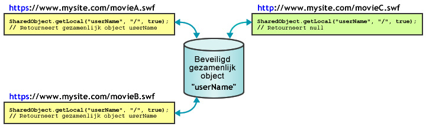

| Pakket | flash.net |
| Klasse | public class SharedObject |
| Overerving | SharedObject |
| Taalversie: | ActionScript 3.0 |
| Runtimeversies: | AIR 1.0, Flash Player 9, Flash Lite 4 |
Gebruik gezamenlijke objecten voor de volgende bewerkingen:
-
Lokaal blijvend maken. Dit is de eenvoudigste toepassing van een gezamenlijk object en hiervoor is Flash Media Server niet nodig. U kunt bijvoorbeeld
SharedObject.getLocal()aanroepen om een gezamenlijk object te maken in een Flash Player-toepassing, zoals een rekenmachine met geheugen. Wanneer de gebruiker de rekenmachine sluit, wordt de laatste waarde in een gezamenlijk object opgeslagen op de computer van de gebruiker. De volgende keer dat de rekenmachine wordt uitgevoerd, bevat deze de laatstgebruikte waarden. U kunt ook de eigenschappen van een gezamenlijk object instellen opnullvoordat de rekenmachinetoepassing wordt gesloten. In dat geval wordt de rekenmachine de volgende keer dat deze wordt uitgevoerd, geopend zonder waarden. Een ander voorbeeld van lokaal blijvend maken is het bijhouden van gebruikersvoorkeuren of andere gegevens voor een complexe website, zoals een record met informatie over de artikelen die een gebruiker heeft gelezen op een nieuwssite. Wanneer u deze gegevens bijhoudt, kunt u artikelen die al zijn gelezen anders weergeven dan nieuwe, ongelezen artikelen. De server wordt minder belast wanneer deze informatie wordt opgeslagen op de computer van de gebruiker. -
Gegevens opslaan op en delen via Flash Media Server. Een gezamenlijk object kan gegevens op de server opslaan zodat andere clients die kunnen ophalen. U kunt bijvoorbeeld
SharedObject.getRemote()aanroepen om een extern, gezamenlijk object te maken, zoals een telefoonlijst, die blijvend op de server staat. Wanneer een client wijzigingen doorvoert in het gezamenlijke object, zijn de gewijzigde gegevens beschikbaar voor alle clients die momenteel met het object zijn verbonden of die er later verbinding mee maken. Wanneer een object alleen lokaal blijvend is en een client gegevens wijzigt terwijl er geen verbinding is met de server, worden de gegevens naar het externe, gezamenlijke object gekopieerd wanneer de client de volgende keer verbinding maakt met het object. - Realtime gegevens delen. Een gezamenlijk object kan realtime gegevens delen met meerdere clients. U kunt bijvoorbeeld een extern, gezamenlijk object openen dat een lijst opslaat van gebruikers die met een chatroom zijn verbonden. Deze lijst is zichtbaar voor alle clients die met het object zijn verbonden. Wanneer een gebruiker de chatroom betreedt of verlaat, wordt het object bijgewerkt en kunnen alle clients die met het object zijn verbonden de gewijzigde lijst van chatroomgebruikers zien.
Als u een lokaal, gezamenlijk object wilt maken, roept u SharedObject.getLocal() aan. Als u een extern, gezamenlijk object wilt maken, roept u SharedObject.getRemote() aan.
Wanneer een toepassing wordt gesloten, worden gezamenlijke objecten leeggemaakt of naar een schijf geschreven. U kunt ook de methode flush() aanroepen om gegevens expliciet naar een schijf te schrijven.
Overwegingen voor lokale schijfruimte. Lokale, gezamenlijke objecten hebben bepaalde beperkingen waarmee u rekening moet houden bij het ontwerpen van een toepassing. Wellicht mogen SWF-bestanden soms geen lokale, gezamenlijke objecten schrijven en soms kunnen de opgeslagen gegevens in lokale, gezamenlijke objecten zonder uw medeweten worden verwijderd. Gebruikers van Flash Player kunnen de schijfruimte beheren die beschikbaar is voor afzonderlijke domeinen of alle domeinen. Wanneer gebruikers de beschikbare hoeveelheid schijfruimte verlagen, kunnen sommige lokale, gezamenlijke objecten worden verwijderd. Gebruikers van Flash Player kunnen tevens privacyopties gebruiken om te voorkomen dat domeinen van derden (andere domeinen dan het domein in de huidige adresbalk van de browser) lokale, gezamenlijke objecten schrijven of lezen. Bovendien geldt bij Mac OS (vanaf AIR 3.3) dat de locatie voor lokaal gedeelde objecten is gewijzigd. Als u dus een upgrade uitvoert naar de 3.3-naamruimte, lijkt het alsof deze objecten verloren zijn geraakt.
Opmerking: SWF-bestanden die niet op een externe server maar op een lokale computer zijn opgeslagen en worden uitgevoerd, kunnen altijd gezamenlijke objecten van derden naar schijf schrijven. Raadpleeg het deelvenster Global Storage Settings in Flash Player Help voor meer informatie over gezamenlijke objecten van derden.
Adobe raadt u aan te controleren op fouten die verband houden met de hoeveelheid schijfruimte en met privacyopties van gebruikers. Voer deze controles uit wanneer u getLocal() en flush() aanroept:
-
SharedObject.getLocal()– Flash Player genereert een uitzondering wanneer een aanroep van deze methode mislukt, bijvoorbeeld wanneer de gebruiker gezamenlijke objecten van derden heeft uitgeschakeld en het domein van uw SWF-bestand niet overeenkomt met het domein in de adresbalk van de browser. -
SharedObject.flush()— Flash Player genereert een uitzondering wanneer een aanroep van deze methode mislukt.SharedObjectFlushStatus.FLUSHEDwordt geretourneerd wanneer de aanroep is gelukt.SharedObjectFlushStatus.PENDINGwordt geretourneerd wanneer meer opslagruimte nodig is. De gebruiker wordt gevraagd meer opslagruimte voor lokaal opgeslagen informatie toe te staan. Vervolgens wordt de gebeurtenisnetStatusverzonden met een informatieobject dat aangeeft of het leegmaken is gelukt of niet.
Wanneer uw SWF-bestand lokale, gezamenlijke objecten probeert te maken of te wijzigen, moet u ervoor zorgen dat uw SWF-bestand ten minste 215 pixels breed en 138 pixels hoog is (de minimale afmetingen voor het weergeven van het dialoogvenster waarin de gebruiker wordt gevraagd de opslaglimiet voor lokale, gezamenlijke objecten te verhogen). Wanneer uw SWF-bestand kleiner is en de opslaglimiet moet worden verhoogd, mislukt SharedObject.flush(), wordt SharedObjectFlushedStatus.PENDING geretourneerd en wordt de gebeurtenis netStatus verzonden.
Externe, gezamenlijke objecten. Met Flash Media Server kunt u externe, gezamenlijke objecten maken en gebruiken die realtime worden gedeeld door alle clients die met uw toepassing zijn verbonden. Wanneer een client een eigenschap van een extern, gezamenlijk object wijzigt, wordt de eigenschap voor alle verbonden clients gewijzigd. U kunt externe, gezamenlijke objecten gebruiken om clients te synchroniseren, bijvoorbeeld gebruikers in een game waaraan meerdere spelers meedoen.
Elk extern, gezamenlijk object heeft een eigenschap data, een object met eigenschappen die gegevens opslaan. Roep setProperty() aan om een eigenschap van het object data te wijzigen. De server werkt de eigenschappen bij, verzendt een gebeurtenis sync en stuurt de eigenschappen terug naar de verbonden clients.
U kunt ervoor kiezen externe, gezamenlijke objecten blijvend te maken op de client, de server of beide. Standaard slaat Flash Player externe, gezamenlijke objecten lokaal blijvend op tot een maximum van 100 kB. Wanneer u een groter object wilt opslaan, wordt in Flash Player het dialoogvenster met lokale opslaginstellingen weergegeven. Daarin kan de gebruiker lokale opslag van het gezamenlijke object toestaan of weigeren. Zorg ervoor dat de grootte van het werkgebied tenminste 215 x 138 pixels is, dit is de minimale grootte die Flash nodig heeft om het dialoogvenster weer te geven.
Wanneer de gebruiker opslag toestaat, slaat de server het gezamenlijke object op en verzendt een gebeurtenis netStatus met de code-eigenschap SharedObject.Flush.Success. Wanneer de gebruiker opslag weigert, slaat de server het gezamenlijke object niet op en verzendt een gebeurtenis netStatus met de code-eigenschap SharedObject.Flush.Failed.
Verwante API-elementen
 Overerfde openbare eigenschappen verbergen
Overerfde openbare eigenschappen verbergen Overerfde openbare eigenschappen weergeven
Overerfde openbare eigenschappen weergeven| Eigenschap | Gedefinieerd door | ||
|---|---|---|---|
| client : Object
Geeft het object aan waarop callback-methoden worden aangeroepen. | SharedObject | ||
 | constructor : Object
Verwijzing naar het klasseobject of de constructorfunctie van een bepaalde objectinstantie. | Object | |
| data : Object [alleen-lezen]
De verzameling kenmerken die aan de eigenschap data van het object is toegewezen; deze kenmerken kunnen worden gedeeld en opgeslagen. | SharedObject | ||
| defaultObjectEncoding : uint [statisch]
De standaardobjectcodering (AMF-versie) voor alle lokale, gezamenlijke objecten die in het SWF-bestand zijn gemaakt. | SharedObject | ||
| fps : Number [alleen-schrijven]
Geeft het aantal keren per seconde aan dat clientwijzigingen van een gezamenlijk object naar de server worden verzonden. | SharedObject | ||
| objectEncoding : uint
De objectcodering (AMF-versie) voor dit gezamenlijke object. | SharedObject | ||
| preventBackup : Boolean [statisch]
Geeft aan of al dan niet een back-up wordt gemaakt van lokaal gedeelde objecten op de back-upservice van de iOS-cloud. | SharedObject | ||
| size : uint [alleen-lezen]
De huidige grootte van het gezamenlijke object, in bytes. | SharedObject | ||
| Methode | Gedefinieerd door | ||
|---|---|---|---|
| addEventListener(type:String, listener:Function, useCapture:Boolean = false, priority:int = 0, useWeakReference:Boolean = false):void
Registreert een gebeurtenislistenerobject bij een object EventDispatcher, zodat de listener een melding van een gebeurtenis ontvangt. | EventDispatcher | |
Schoont alle gegevens van lokale, gezamenlijke objecten op en verwijdert het gezamenlijke object van de schijf. | SharedObject | ||
Sluit de verbinding tussen een extern, gezamenlijk object en de server. | SharedObject | ||
Maakt met een extern, gezamenlijk object op een server verbinding via een opgegeven object NetConnection. | SharedObject | ||
|
Verzendt een gebeurtenis naar de gebeurtenisstroom. | EventDispatcher | |
Schrijft een lokaal blijvend gezamenlijk object direct naar een lokaal bestand. | SharedObject | ||
[statisch]
Retourneert een verwijzing naar een lokaal blijvend gezamenlijk object dat alleen voor de huidige client beschikbaar is. | SharedObject | ||
getRemote(name:String, remotePath:String = null, persistence:Object = false, secure:Boolean = false):SharedObject [statisch]
Retourneert een verwijzing naar een gezamenlijk object op Flash Media Server dat door meerdere clients kan worden benaderd. | SharedObject | ||
|
Controleert of het object EventDispatcher listeners heeft geregistreerd voor een specifiek type gebeurtenis. | EventDispatcher | |
|
Geeft aan of voor een object een opgegeven eigenschap is gedefinieerd. | Object | |
|
Geeft aan of een instantie van de klasse Object zich in de prototypeketen van het object bevindt dat als parameter is opgegeven. | Object | |
|
Geeft aan of de opgegeven eigenschap bestaat en kan worden opgesomd. | Object | |
|
Verwijdert een listener uit het object EventDispatcher. | EventDispatcher | |
Verzendt een bericht naar alle clients die met een extern, gezamenlijk object zijn verbonden en naar de client die het bericht heeft verzonden. | SharedObject | ||
Geeft aan de server door dat de waarde van een eigenschap in het gezamenlijke object is gewijzigd. | SharedObject | ||
Werkt de waarde van een eigenschap in een gezamenlijk object bij en geeft aan de server door dat de waarde van de eigenschap is gewijzigd. | SharedObject | ||
|
Stelt de beschikbaarheid van een dynamische eigenschap voor lusbewerkingen in. | Object | |
|
Geeft de tekenreeksweergave van dit object weer, geformatteerd volgens de locatiespecifieke conventies. | Object | |
|
Retourneert een tekenreeksrepresentatie van het opgegeven object. | Object | |
|
Retourneert de primitieve waarde van het opgegeven object. | Object | |
|
Controleert of een gebeurtenislistener is geregistreerd bij dit object EventDispatcher of een van de voorouders voor het opgegeven type gebeurtenis. | EventDispatcher | |
| Gebeurtenis | Overzicht | Gedefinieerd door | ||
|---|---|---|---|---|
| [uitgezonden gebeurtenis] Wordt verzonden wanneer Flash Player of de AIR-toepassing de besturingssysteemfocus krijgt en actief wordt. | EventDispatcher | ||
| Wordt verzonden wanneer een uitzondering asynchroon — wordt gegenereerd, dat wil zeggen, vanuit native asynchrone code. | SharedObject | |||
| [uitgezonden gebeurtenis] Wordt verzonden wanneer Flash Player of de AIR-toepassing de systeemfocus verliest en inactief wordt. | EventDispatcher | ||
| Wordt verzonden wanneer een instantie SharedObject de status of fout meldt. | SharedObject | |||
| Wordt verzonden wanneer een extern, gezamenlijk object door de server is bijgewerkt. | SharedObject | |||
client | eigenschap |
client:Object| Taalversie: | ActionScript 3.0 |
| Runtimeversies: | AIR 1.0, Flash Player 9, Flash Lite 4 |
Geeft het object aan waarop callback-methoden worden aangeroepen. Het standaardobject is this. U kunt de eigenschap client instellen op een ander object, waardoor callback-methoden worden aangeroepen met dat andere object.
Implementatie
public function get client():Object public function set client(value:Object):voidGegenereerde uitzondering
TypeError — De eigenschap client moet zijn ingesteld op een object dat niet null is.
|
data | eigenschap |
data:Object [alleen-lezen] | Taalversie: | ActionScript 3.0 |
| Runtimeversies: | AIR 1.0, Flash Player 9, Flash Lite 4 |
De verzameling kenmerken die aan de eigenschap data van het object is toegewezen; deze kenmerken kunnen worden gedeeld en opgeslagen. Elk kenmerk kan een object zijn van elk type in ActionScript of JavaScript (Array, Number, Boolean, ByteArray, XML, enzovoort). Met de volgende regels worden bijvoorbeeld waarden aan verschillende aspecten van een gezamenlijk object toegewezen:
var items_array:Array = new Array(101, 346, 483);
var currentUserIsAdmin:Boolean = true;
var currentUserName:String = "Ramona";
var my_so:SharedObject = SharedObject.getLocal("superfoo");
my_so.data.itemNumbers = items_array;
my_so.data.adminPrivileges = currentUserIsAdmin;
my_so.data.userName = currentUserName;
for (var prop in my_so.data) {
trace(prop+": "+my_so.data[prop]);
}
Alle kenmerken van de eigenschap data van een gezamenlijk object worden opgeslagen wanneer het object blijvend is. Het gezamenlijke object bevat de volgende informatie:
userName: Ramona
adminPrivileges: true
itemNumbers: 101,346,483
Opmerking: wijs waarden niet direct toe aan de eigenschap data van een gezamenlijk object, zoals in so.data = someValue. Deze toewijzingen worden genegeerd in Flash.
Gebruik code als delete so.data.attributeName om kenmerken te verwijderen van lokale, gezamenlijke objecten. Wanneer u een kenmerk voor een lokaal, gezamenlijk object instelt op null of undefined, wordt het kenmerk niet verwijderd.
Wanneer u waarden van het type private voor een gezamenlijk object wilt maken (waarden die alleen beschikbaar zijn voor de clientinstantie terwijl het object in gebruik is en die niet worden opgeslagen met het object wanneer deze wordt afgesloten), moet u eigenschappen maken die niet de opslagnaam data hebben, zoals wordt getoond in het volgende voorbeeld:
var my_so:SharedObject = SharedObject.getLocal("superfoo");
my_so.favoriteColor = "blue";
my_so.favoriteNightClub = "The Bluenote Tavern";
my_so.favoriteSong = "My World is Blue";
for (var prop in my_so) {
trace(prop+": "+my_so[prop]);
}
Het gezamenlijke object bevat de volgende gegevens:
favoriteSong: My World is Blue
favoriteNightClub: The Bluenote Tavern
favoriteColor: blue
data: [object Object]
Voor externe, gezamenlijke objecten die met een server worden gebruikt, zijn alle kenmerken van de eigenschap data beschikbaar voor alle clients die met het gezamenlijke object zijn verbonden en alle kenmerken worden opgeslagen wanneer het object blijvend is. Wanneer een client de waarde van een kenmerk wijzigt, zien alle clients de nieuwe waarde.
Implementatie
public function get data():ObjectVerwante API-elementen
defaultObjectEncoding | eigenschap |
defaultObjectEncoding:uint| Taalversie: | ActionScript 3.0 |
| Runtimeversies: | AIR 1.0, Flash Player 9, Flash Lite 4 |
De standaardobjectcodering (AMF-versie) voor alle lokale, gezamenlijke objecten die in het SWF-bestand zijn gemaakt. Wanneer lokale, gezamenlijke objecten naar schijf worden geschreven, geeft de eigenschap SharedObject.defaultObjectEncoding aan welke versie van Action Message Format moet worden gebruikt: de indeling van ActionScript 3.0 (AMF3) of de indeling van ActionScript 1.0 of 2.0 (AMF0).
Zie de beschrijving van de eigenschap objectEncoding voor meer informatie over objectcodering, waaronder het verschil tussen codering in lokale en externe gezamenlijke objecten.
De standaardwaarde van SharedObject.defaultObjectEncoding is ingesteld op het gebruik van de indeling van ActionScript 3.0, AMF3. Wanneer u lokale, gezamenlijk objecten moet schrijven die leesbaar zijn voor SWF-bestanden waarin ActionScript 1.0 of 2.0 wordt gebruikt, stelt u SharedObject.defaultObjectEncoding in op het gebruik van de indeling van ActionScript 1.0 of ActionScript 2.0, flash.net.ObjectEncoding.AMF0. U doet dit aan het begin van het script, voordat u lokale, gezamenlijk objecten maakt. Alle lokale, gezamenlijke objecten die hierna worden gemaakt, gebruiken AMF0-codering en kunnen communiceren met oudere inhoud. U kunt de waarde objectEncoding van bestaande lokale, gezamenlijke objecten niet wijzigen door SharedObject.defaultObjectEncoding in te stellen nadat de lokale, gezamenlijke objecten zijn gemaakt.
Wanneer u de objectcodering voor elk object afzonderlijk wilt instellen, en niet voor alle gezamenlijke objecten die zijn gemaakt door het SWF-bestand, stelt u de eigenschap objectEncoding van het lokale, gezamenlijke object in.
Implementatie
public static function get defaultObjectEncoding():uint public static function set defaultObjectEncoding(value:uint):voidVerwante API-elementen
fps | eigenschap |
fps:Number [alleen-schrijven] | Taalversie: | ActionScript 3.0 |
| Runtimeversies: | AIR 1.0, Flash Player 9, Flash Lite 4 |
Geeft het aantal keren per seconde aan dat clientwijzigingen van een gezamenlijk object naar de server worden verzonden.
Gebruik deze methode wanneer u de hoeveelheid verkeer tussen de client en de server wilt beheren. Wanneer bijvoorbeeld de verbinding tussen de client en server relatief langzaam is, wilt u fps mogelijk instellen op een relatief lage waarde. Wanneer de client is verbonden met een toepassing met meerdere gebruikers waarbij timing zeer belangrijk is, wilt u fps mogelijk juist instellen op een relatief hoge waarde.
Wanneer fps wordt ingesteld, wordt een gebeurtenis sync geactiveerd en worden alle wijzigingen in de server bijgewerkt. Wanneer u de server alleen handmatig wilt bijwerken, stelt u fps in op 0.
Wijzigingen worden pas naar de server verzonden wanneer de gebeurtenis sync wordt verzonden. Wanneer de reactietijd van de server lang is, kunnen updates mogelijk minder vaak naar de server worden verzonden dan de waarde die is opgegeven in deze eigenschap.
Implementatie
public function set fps(value:Number):voidobjectEncoding | eigenschap |
objectEncoding:uint| Taalversie: | ActionScript 3.0 |
| Runtimeversies: | AIR 1.0, Flash Player 9, Flash Lite 4 |
De objectcodering (AMF-versie) voor dit gezamenlijke object. Wanneer een lokaal, gezamenlijk object naar schijf wordt geschreven, geeft de eigenschap objectEncoding aan welke versie van Action Message Format moet worden gebruikt: de indeling van ActionScript 3.0 (AMF3) of de indeling van ActionScript 1.0 of 2.0 (AMF0).
Objectcodering wordt verschillend verwerkt, afhankelijk van het feit of het gezamenlijk object lokaal of extern is.
- Lokale, gezamenlijke objecten. U de waarde van de eigenschap
objectEncodingophalen of instellen voor lokale, gezamenlijke objecten. De waarde vanobjectEncodingheeft invloed op de indeling die wordt gebruikt om dit lokale, gezamenlijke object te schrijven. Wanneer dit lokale, gezamenlijke object leesbaar moet zijn voor SWF-bestanden waarin ActionScript 1.0 of 2.0 wordt gebruikt, stelt uobjectEncodingin opObjectEncoding.AMF0. Zelfs wanneer de objectcodering wordt ingesteld om AMF3 te schrijven, kan Flash Player nog steeds lokale, gezamenlijke objecten in AMF0-indeling lezen. Wanneer u de standaardwaarde van deze eigenschap,ObjectEncoding.AMF3, gebruikt, kan uw SWF-bestand dus nog steeds gezamenlijke objecten lezen die zijn gemaakt door SWF-bestanden waarin ActionScript 1.0 of 2.0 wordt gebruikt. - Externe, gezamenlijke objecten. Wanneer een extern, gezamenlijk object is verbonden met de server, overerft dit object de instelling
objectEncodingvan de gekoppelde instantie NetConnection (de instantie die wordt gebruikt om het externe, gezamenlijke object te verbinden). Wanneer een extern, gezamenlijk object niet is verbonden met de server, overerft dit object de instellingdefaultObjectEncodingvan de gekoppelde instantie NetConnection. Aangezien de waarde van de eigenschapobjectEncodingvan een extern, gezamenlijk object wordt bepaald door de instantie NetConnection, is deze eigenschap alleen-lezen voor externe, gezamenlijke objecten.
Implementatie
public function get objectEncoding():uint public function set objectEncoding(value:uint):voidGegenereerde uitzondering
ReferenceError — U wilde de waarde van de eigenschap objectEncoding instellen op een extern, gezamenlijk object. Deze eigenschap is alleen-lezen voor externe, gezamenlijke objecten omdat de waarde ervan wordt bepaald door de gekoppelde instantie NetConnection.
|
Verwante API-elementen
preventBackup | eigenschap |
preventBackup:Boolean| Taalversie: | ActionScript 3.0 |
| Runtimeversies: | AIR 3.7 |
Geeft aan of al dan niet een back-up wordt gemaakt van lokaal gedeelde objecten op de back-upservice van de iOS-cloud.
Geef true of false op:
- true - Voorkomt dat een back-up wordt gemaakt van lokaal gedeelde objecten op de back-upservice van de iOS-cloud.
- false (standaardinstelling) - Er wordt een back-up gemaakt van lokaal gedeelde objecten op de back-upservice van de iOS-cloud.
Deze eigenschap is alleen van toepassing op lokaal gedeelde objecten en is alleen voor iOS.
Implementatie
public static function get preventBackup():Boolean public static function set preventBackup(value:Boolean):voidsize | eigenschap |
size:uint [alleen-lezen] | Taalversie: | ActionScript 3.0 |
| Runtimeversies: | AIR 1.0, Flash Player 9, Flash Lite 4 |
De huidige grootte van het gezamenlijke object, in bytes.
Flash berekent de grootte van een gezamenlijk object door alle gegevenseigenschappen ervan te doorlopen. Hoe meer gegevenseigenschappen het object heeft, hoe langer het bepalen van de grootte duurt. Het bepalen van de objectgrootte kan een aanzienlijke hoeveelheid verwerkingstijd in beslag nemen. Mogelijk wilt u deze methode vermijden tenzij u deze expliciet moet gebruiken.
Implementatie
public function get size():uintVoorbeeld ( Hoe dit voorbeeld te gebruiken )
"thehobbit" gemaakt. Een eigenschap met de naam username wordt toegevoegd aan de eigenschap data van het object SharedObject. Vervolgens wordt de eigenschap size gevolgd, die de aangegeven waarde retourneert.
import flash.net.SharedObject;
// if these get copied or not
var mySo:SharedObject = SharedObject.getLocal("thehobbit");
mySo.data.username = "bilbobaggins";
trace(mySo.size); // 55
clear | () | methode |
public function clear():void| Taalversie: | ActionScript 3.0 |
| Runtimeversies: | AIR 1.0, Flash Player 9, Flash Lite 4 |
Schoont alle gegevens van lokale, gezamenlijke objecten op en verwijdert het gezamenlijke object van de schijf. De verwijzing naar het gezamenlijke object is nog steeds actief, maar de eigenschappen data ervan zijn verwijderd.
Voor externe, gezamenlijke objecten die met Flash Media Server worden gebruikt, verbreekt clear() de verbinding met het object en schoont alle gegevens op. Wanneer het gezamenlijke object lokaal blijvend is, verwijdert deze methode bovendien het gezamenlijke object van de schijf. De verwijzing naar het gezamenlijke object is nog steeds actief, maar de eigenschappen data ervan zijn verwijderd.
Voorbeeld ( Hoe dit voorbeeld te gebruiken )
hostName. Een eigenschap met de naam username wordt toegevoegd aan de eigenschap data van het object SharedObject. Ten slotte wordt de methode clear() aangeroepen, waarmee alle informatie wordt gewist die werd toegevoegd aan het gegevensobject (in dit geval een enkele eigenschap met de naam username ).
package {
import flash.net.SharedObject;
public class SharedObject_clear {
private var hostName:String = "yourDomain";
private var username:String = "yourUsername";
public function SharedObject_clear() {
var mySo:SharedObject = SharedObject.getLocal(hostName);
if(mySo.data.username == null) {
mySo.data.username = username;
trace("set: " + mySo.data.username); // yourUsername
}
else {
mySo.clear();
trace("cleared: " + mySo.data.username); // undefined
}
}
}
}
close | () | methode |
public function close():void| Taalversie: | ActionScript 3.0 |
| Runtimeversies: | AIR 1.0, Flash Player 9, Flash Lite 4 |
Sluit de verbinding tussen een extern, gezamenlijk object en de server. Wanneer een extern, gezamenlijk object lokaal blijvend is, kan de gebruiker wijzigingen aanbrengen in de lokale kopie van het object nadat deze methode is aangeroepen. De volgende keer dat de gebruiker verbinding maakt met het externe, gezamenlijke object, worden wijzigingen in het lokale object verstuurd naar de server.
connect | () | methode |
public function connect(myConnection:NetConnection, params:String = null):void| Taalversie: | ActionScript 3.0 |
| Runtimeversies: | AIR 1.0, Flash Player 9, Flash Lite 4 |
Maakt met een extern, gezamenlijk object op een server verbinding via een opgegeven object NetConnection. Gebruik deze methode na het aanroepen van getRemote(). Wanneer de verbinding is gelukt, wordt de gebeurtenis sync verzonden.
Voordat u met een extern, gezamenlijk object gaat werken, moet u eerst op fouten controleren met een instructie try..catch..finally. Luister vervolgens naar de gebeurtenis sync en handel deze af voordat u het gezamenlijke object wijzigt. Wijzigingen die lokaal worden doorgevoerd, voordat de gebeurtenis sync wordt verzonden, kunnen verloren gaan.
Roep de methode connect() aan om verbinding te maken met een extern, gezamenlijk object, bijvoorbeeld:
var myRemoteSO:SharedObject = SharedObject.getRemote("mo", myNC.uri, false);
myRemoteSO.connect(myNC);
Parameters
myConnection:NetConnection — Een object NetConnection (bijvoorbeeld een object NetConnection dat wordt gebruikt voor communicatie met Flash Media Server) dat gebruikmaakt van RTMP (Real-Time Messaging Protocol).
| |
params:String (default = null) |
Gegenereerde uitzondering
Error — Flash Player kan geen verbinding maken met het opgegeven externe, gezamenlijke object. Controleer of de instantie NetConnection geldig is en is verbonden en of het externe, gezamenlijke object is gemaakt op de server.
|
Verwante API-elementen
flush | () | methode |
public function flush(minDiskSpace:int = 0):String| Taalversie: | ActionScript 3.0 |
| Runtimeversies: | AIR 1.0, Flash Player 9, Flash Lite 4 |
Schrijft een lokaal blijvend gezamenlijk object direct naar een lokaal bestand. Wanneer u deze methode niet gebruikt, schrijft Flash Player het gezamenlijke object naar een bestand wanneer de sessie van het gezamenlijke object wordt beëindigd. Dit gebeurt wanneer het SWF-bestand wordt gesloten, wanneer het gezamenlijke object wordt opgeschoond omdat er geen verwijzingen meer naar bestaan of wanneer uSharedObject.clear() of SharedObject.close() aanroept.
Wanneer deze methode SharedObjectFlushStatus.PENDING retourneert, wordt in Flash Player een dialoogvenster weergegeven waarin de gebruiker wordt gevraagd de hoeveelheid beschikbare schijfruimte voor objecten van dit domein te verhogen. Wanneer u de ruimte voor het gezamenlijke object wilt uitbreiden wanneer het in de toekomst wordt opgeslagen (dit voorkomt geretourneerde waarden PENDING), kunt u een waarde voor minDiskSpace doorgeven. Wanneer Flash Player het bestand probeert te schrijven, wordt gezocht naar het aantal bytes dat aan minDiskSpace is doorgegeven in plaats van te zoeken naar voldoende ruimte om het gezamenlijke object met de huidige grootte op te slaan.
Wanneer u bijvoorbeeld verwacht dat een gezamenlijk object maximaal 500 bytes groot wordt, geeft u 500 door voor minDiskSpace, ook wanneer het object in het begin veel kleiner is. Wanneer Flash de gebruiker vraagt om schijfruimte toe te wijzen voor het gezamenlijke object, wordt er om 500 bytes gevraagd. Wanneer de gebruiker deze hoeveelheid heeft toegewezen, hoeft in Flash niet meer om meer ruimte te worden gevraagd voor toekomstige pogingen om het object leeg te maken (zolang het object niet groter is dan 500 bytes).
Nadat de gebruiker op het dialoogvenster reageert, wordt deze methode weer aangeroepen. Er wordt een gebeurtenis netStatus verzonden met een code-eigenschap SharedObject.Flush.Success of SharedObject.Flush.Failed.
Parameters
minDiskSpace:int (default = 0) |
String — Een van de volgende waarden:
|
Gegenereerde uitzondering
Error — Flash Player kan het gezamenlijke object niet naar schijf schrijven. Deze fout kan optreden wanneer de gebruiker voor objecten van dit domein lokale opslag van gegevens permanent heeft geweigerd.
Opmerking: lokale inhoud kan altijd gezamenlijke objecten van domeinen van derden (andere domeinen dan het domein in de huidige adresbalk van de browser) naar schijf schrijven, zelfs wanneer het schrijven van gezamenlijke objecten van derden naar schijf niet is toegestaan. |
Verwante API-elementen
Voorbeeld ( Hoe dit voorbeeld te gebruiken )
hostName. Een eigenschap met de naam username wordt toegevoegd aan de eigenschap data van het object SharedObject. Vervolgens wordt de methode flush() aangeroepen, gevolgd door een controle om te bepalen of de tekenreeks pending of een van de Booleaanse waarden true of false werd geretourneerd. Houd er rekening mee dat alle open instanties SharedObject automatisch worden leeggemaakt wanneer de huidige instantie van Flash Player wordt gesloten.
package {
import flash.net.SharedObject;
public class SharedObject_flush {
private var hostName:String = "yourDomain";
private var username:String = "yourUsername";
public function SharedObject_flush() {
var mySo:SharedObject = SharedObject.getLocal(hostName);
mySo.data.username = username;
var flushResult:Object = mySo.flush();
trace("flushResult: " + flushResult);
trace(mySo.data.username); // yourUsername
}
}
}
getLocal | () | methode |
public static function getLocal(name:String, localPath:String = null, secure:Boolean = false):SharedObject| Taalversie: | ActionScript 3.0 |
| Runtimeversies: | AIR 1.0, Flash Player 9, Flash Lite 4 |
Retourneert een verwijzing naar een lokaal blijvend gezamenlijk object dat alleen voor de huidige client beschikbaar is. Wanneer het gezamenlijke object nog niet bestaat, wordt dit gemaakt met deze methode. Wanneer een waarde die wordt doorgegeven aan getLocal() ongeldig is, of wanneer de aanroep mislukt, genereert Flash Player een uitzondering.
De volgende code toont hoe u de geretourneerde verwijzing naar een gezamenlijk object toewijst aan een variabele:
var so:SharedObject = SharedObject.getLocal("savedData");
Opmerking: wanneer de gebruiker heeft opgegeven dat lokale opslag voor dit domein nooit is toegestaan, wordt het object niet lokaal opgeslagen, ook niet wanneer een waarde wordt opgegeven voor localPath. De uitzondering op deze regel is lokale inhoud. Lokale inhoud kan altijd gezamenlijke objecten van domeinen van derden (andere domeinen dan het domein in de huidige adresbalk van de browser) naar schijf schrijven, zelfs wanneer het schrijven van gezamenlijke objecten van derden naar schijf niet is toegestaan.
Flash controleert de locatie van het SWF-bestand waarmee het gezamenlijke object is gemaakt om naamconflicten te vermijden. Wanneer een bestand op www.myCompany.com/apps/stockwatcher.swf het gezamenlijke object portfolio maakt, bestaat er bijvoorbeeld geen conflict met een object met de naam portfolio dat is gemaakt door een SWF-bestand op www.yourCompany.com/photoshoot.swf omdat de SWF-bestanden afkomstig zijn uit verschillende mappen.
Hoewel de parameter localPath optioneel is, kan deze in bepaalde gevallen zeer nuttig zijn, vooral wanneer andere SWF-bestanden toegang moeten hebben tot het gezamenlijke object. Wanneer de gegevens in het gezamenlijke object specifiek bij één SWF-bestand horen dat niet naar een andere locatie wordt verplaatst, is het nuttig om de standaardwaarde te gebruiken. Wanneer andere SWF-bestanden toegang tot het gezamenlijke object moeten hebben, of wanneer het SWF-bestand waarmee het gezamenlijke object wordt gemaakt later wordt verplaatst, bepaalt de waarde van deze parameter de toegankelijkheid van het gezamenlijke object. Wanneer u bijvoorbeeld een gezamenlijk object maakt waarvoor localPath is ingesteld op de standaardwaarde van het volledige pad naar het SWF-bestand, heeft geen ander SWF-bestand toegang tot dat gezamenlijke object. Wanneer u het oorspronkelijke SWF-bestand later naar een andere locatie verplaatst, heeft zelfs dat SWF-bestand geen toegang meer tot de gegevens die al zijn opgeslagen in het gezamenlijke object.
Wanneer u wilt voorkomen dat toegang tot een gezamenlijk object per ongeluk wordt beperkt, gebruikt u de parameter localpath. De meest tolerante benadering is om de parameter localPath in te stellen op / (slash). Daarmee is het gezamenlijke object beschikbaar voor alle SWF-bestanden in het domein, maar is de kans op naamconflicten met andere gezamenlijke objecten in het domein groter. Een meer beperkende benadering is om mapnamen uit het volledige pad naar het SWF-bestand toe te voegen aan localPath. Voor een gezamenlijk object portfolio dat is gemaakt door het SWF-bestand op www.myCompany.com/apps/stockwatcher.swf, kunt u de parameter localPath bijvoorbeeld instellen op /, /apps of /apps/stockwatcher.swf. U moet bepalen welke benadering optimale flexibiliteit biedt voor uw toepassing.
Houd rekening met het volgende beveiligingsmodel wanneer u deze methode gebruikt:
- U hebt geen toegang tot gezamenlijke objecten die sandbox-grenzen overschrijden.
- Gebruikers kunnen de toegang tot gezamenlijke objecten beperken via het dialoogvenster Flash Player Settings of via Settings Manager. Een toepassing kan standaard gezamenlijke objecten maken van maximaal 100 kB aan gegevens per domein. Beheerders en gebruikers kunnen ook beperkingen instellen voor het schrijven naar het bestandssysteem.
Stel dat u SWF-bestandsinhoud publiceert om deze af te spelen als lokale bestanden (lokaal geïnstalleerde SWF-bestanden of EXE-bestanden) en u vanuit meerdere lokale SWF-bestanden toegang tot een bepaald gezamenlijk object moet hebben. In dat geval moet u er rekening mee houden dat voor lokale bestanden twee verschillende locaties kunnen worden gebruikt om gezamenlijke objecten op te slaan. Welk domein wordt gebruikt, is afhankelijk van de verleende beveiligingsbevoegdheden aan het lokale bestand waarmee het gezamenlijke object is gemaakt. Voor lokale bestanden kunnen drie verschillende bevoegdheidsniveaus worden ingesteld:
- Alleen toegang tot het lokale bestandssysteem.
- Alleen toegang tot het netwerk.
- Toegang tot zowel het lokale bestandsysteem als het netwerk.
Lokale bestanden met toegang tot het lokale bestandssysteem (niveau 1 of 3) slaan hun gezamenlijke objecten op één locatie op. Lokale bestanden zonder toegang tot het lokale bestandssysteem (niveau 2) slaan hun gezamenlijke objecten op verschillende locaties op.
U kunt voorkomen dat een SWF-bestand deze methode gebruikt door de parameter allowNetworking in te stellen van de tags object en embed op de HTML-pagina die de SWF-inhoud bevat.
Lees voor meer informatie het onderwerp Security in het Flash Player Developer Center.
Parameters
name:String — De naam van het object. De naam mag slashes (/ ) bevatten, dus werk/adressen is bijvoorbeeld een geldige naam. Spaties zijn niet toegestaan in de naam van een gezamenlijk object, evenmin als de volgende tekens:
~ % & \ ; : " ' , < > ? # | |
localPath:String (default = null) | |
secure:Boolean (default = false)
Wanneer uw SWF-bestand wordt geleverd via een niet-HTTPS-verbinding en u deze parameter probeert in te stellen op In het volgende voorbeeld wordt getoond hoe de parameter  |
SharedObject — Een verwijzing naar een gezamenlijk object dat lokaal blijvend is en alleen voor de huidige client beschikbaar is. Wanneer Flash Player het gezamenlijke object niet kan maken of vinden (bijvoorbeeld wanneer localPath is opgegeven terwijl deze map niet bestaat), genereert deze methode een uitzondering.
|
Gegenereerde uitzondering
Error — Flash Player kan het gezamenlijke object om wat voor reden dan ook niet maken. Deze fout kan optreden wanneer het maken van een blijvend, gezamenlijk object en de opslag ervan door Flash-inhoud van derden niet wordt toegestaan (is niet van toepassing op lokale inhoud). Gebruikers kunnen blijvende, gezamenlijke objecten van derden weigeren via het deelvenster Global Storage Settings van Settings Manager op http://www.adobe.com/support/documentation/nl/flashplayer/help/settings_manager03.html.
|
getRemote | () | methode |
public static function getRemote(name:String, remotePath:String = null, persistence:Object = false, secure:Boolean = false):SharedObject| Taalversie: | ActionScript 3.0 |
| Runtimeversies: | AIR 1.0, Flash Player 9, Flash Lite 4 |
Retourneert een verwijzing naar een gezamenlijk object op Flash Media Server dat door meerdere clients kan worden benaderd. Wanneer het externe, gezamenlijke object nog niet bestaat, wordt dit gemaakt met deze methode.
Als u een extern, gezamenlijk object wilt maken, roept u getRemote() en vervolgens connect() aan om het externe gezamenlijke object te verbinden met de server, zoals hieronder wordt getoond:
var nc:NetConnection = new NetConnection();
nc.connect("rtmp://somedomain.com/applicationName");
var myRemoteSO:SharedObject = SharedObject.getRemote("mo", nc.uri, false);
myRemoteSO.connect(nc);
Luister naar de gebeurtenis sync en handel deze af om te controleren of de lokale en externe kopieën van het gezamenlijke object zijn gesynchroniseerd. Alle clients die dit object willen delen, moeten dezelfde waarden doorgeven voor de parameters name en remotePath.
Wanneer u een gezamenlijk object wilt maken dat alleen beschikbaar is voor de huidige client, gebruikt u SharedObject.getLocal().
Parameters
name:String — De naam van het externe, gezamenlijke object. De naam mag slashes (/) bevatten, dus werk/adressen is bijvoorbeeld een geldige naam. Spaties zijn niet toegestaan in de naam van een gezamenlijk object, evenmin als de volgende tekens:
~ % & \ ; : " ' , > ? ? # | |
remotePath:String (default = null)connect().
| |
persistence:Object (default = false)
Opmerking: wanneer de gebruiker heeft opgegeven dat lokale opslag voor dit domein nooit is toegestaan, wordt het object niet lokaal opgeslagen, ook niet wanneer een lokaal pad wordt opgegeven voor de parameter persistence. Zie de beschrijving van de klasse voor meer informatie. | |
secure:Boolean (default = false)secure bij de vermelding van de methode getLocal voor meer informatie.
|
SharedObject — Een verwijzing naar een object dat door meerdere clients kan worden gedeeld.
|
Gegenereerde uitzondering
Error — Flash Player kan het gezamenlijke object niet maken of vinden. Dit kan voorkomen wanneer niet-bestaande paden zijn opgegeven voor de parameters remotePath en persistence.
|
Verwante API-elementen
send | () | methode |
public function send(... arguments):void| Taalversie: | ActionScript 3.0 |
| Runtimeversies: | AIR 1.0, Flash Player 9, Flash Lite 4 |
Verzendt een bericht naar alle clients die met een extern, gezamenlijk object zijn verbonden en naar de client die het bericht heeft verzonden. Wanneer u het bericht wilt verwerken en erop wilt reageren, maakt u een callback-functie die aan het gezamenlijke object is gekoppeld.
Parameters
... arguments — Een of meer argumenten: een tekenreeks die het bericht identificeert, de naam van een of meer handlerfuncties om aan het gezamenlijke object te koppelen, en optionele parameters van een willekeurig type. De naam van de handler kan slechts één niveau diep zijn genest (en kan dus niet de vorm bovenliggend/onderliggend hebben) en is relatief ten opzichte van het gezamenlijke object. De argumenten hebben een serienummer en worden verzonden via de verbinding. De ontvangende handler ontvangt de argumenten in dezelfde volgorde. Wanneer een parameter een circulair object is (bijvoorbeeld een gekoppelde lijst met kringverwijzingen) worden de verwijzingen op de juiste manier verwerkt door de serienummering.
Opmerking: gebruik geen gereserveerde term voor de functienamen. Zo zal |
setDirty | () | methode |
public function setDirty(propertyName:String):void| Taalversie: | ActionScript 3.0 |
| Runtimeversies: | AIR 1.0, Flash Player 9, Flash Lite 4 |
Geeft aan de server door dat de waarde van een eigenschap in het gezamenlijke object is gewijzigd. Deze methode markeert eigenschappen als dirty, hetgeen gewijzigd betekent.
Roep SharedObject.setProperty() aan om eigenschappen te maken voor een gezamenlijk object.
De methode SharedObject.setProperty() implementeert de methode setDirty(). In de meeste gevallen, bijvoorbeeld wanneer de waarde van een eigenschap een elementair type zoals String of Number is, kunt u setProperty() aanroepen in plaats van setDirty(). Wanneer de waarde van een eigenschap echter een object is dat de eigen eigenschappen bevat, roept u setDirty() aan om aan te geven wanneer een waarde binnen het object is gewijzigd.
Parameters
propertyName:String — De naam van de eigenschap die is gewijzigd.
|
Verwante API-elementen
setProperty | () | methode |
public function setProperty(propertyName:String, value:Object = null):void| Taalversie: | ActionScript 3.0 |
| Runtimeversies: | AIR 1.0, Flash Player 9, Flash Lite 4 |
Werkt de waarde van een eigenschap in een gezamenlijk object bij en geeft aan de server door dat de waarde van de eigenschap is gewijzigd. De methode setProperty() markeert eigenschappen expliciet als gewijzigd (of 'dirty').
Raadpleeg de documentatie over Flash Media Server voor meer informatie over externe, gezamenlijke objecten.
Opmerking: de methode SharedObject.setProperty() implementeert de methode setDirty(). In de meeste gevallen, bijvoorbeeld wanneer de waarde van een eigenschap een elementair type zoals String of Number is, gebruikt u setProperty() in plaats van setDirty(). Wanneer de waarde van een eigenschap echter een object is dat de eigen eigenschappen bevat, gebruikt u setDirty() om aan te geven wanneer een waarde binnen het object is gewijzigd. Het is over het algemeen raadzaam setProperty() aan te roepen in plaats van setDirty(), omdat setProperty() een eigenschapwaarde alleen bijwerkt wanneer deze waarde is gewijzigd, terwijl setDirty() synchronisatie op alle geabonneerde clients forceert.
Parameters
propertyName:String — De naam van de eigenschap in het gezamenlijke object.
| |
value:Object (default = null)null om de eigenschap te verwijderen.
|
Verwante API-elementen
asyncError | Gebeurtenis |
flash.events.AsyncErrorEventeigenschap AsyncErrorEvent.type =
flash.events.AsyncErrorEvent.ASYNC_ERROR| Taalversie: | ActionScript 3.0 |
| Runtimeversies: | AIR 1.0, Flash Player 9, Flash Lite 4 |
Wordt verzonden wanneer een uitzondering asynchroon wordt gegenereerd, dat wil zeggen, vanuit native asynchrone code.
De constanteAsyncErrorEvent.ASYNC_ERROR definieert de waarde van de eigenschap type van een gebeurtenisobject asyncError.
Deze gebeurtenis heeft de volgende eigenschappen:
| Eigenschap | Waarde |
|---|---|
bubbles | false |
cancelable | false; er is geen standaardgedrag om te annuleren. |
currentTarget | Het object dat het gebeurtenisobject actief verwerkt met een gebeurtenislistener. |
target | Het object dat de gebeurtenis verzendt. |
error | De fout die de gebeurtenis heeft geactiveerd. |
netStatus | Gebeurtenis |
flash.events.NetStatusEventeigenschap NetStatusEvent.type =
flash.events.NetStatusEvent.NET_STATUS| Taalversie: | ActionScript 3.0 |
| Runtimeversies: | AIR 1.0, Flash Player 9, Flash Lite 4 |
Wordt verzonden wanneer een instantie SharedObject de status of fout meldt. De gebeurtenis netStatus bevat de eigenschap info. Dit is een informatieobject dat specifieke informatie over de gebeurtenis bevat, zoals of een poging om verbinding te maken is geslaagd en of het gezamenlijke object naar de lokale schijf is geschreven.
type van een gebeurtenisobject netStatus.
Deze gebeurtenis heeft de volgende eigenschappen:
| Eigenschap | Waarde |
|---|---|
bubbles | false |
cancelable | false; er is geen standaardgedrag om te annuleren. |
currentTarget | Het object dat het gebeurtenisobject actief verwerkt met een gebeurtenislistener. |
info | Een object met eigenschappen die de status of fout van het object beschrijven. |
target | Het object NetConnection of NetStream dat zijn status meldt. |
Verwante API-elementen
sync | Gebeurtenis |
flash.events.SyncEventeigenschap SyncEvent.type =
flash.events.SyncEvent.SYNC| Taalversie: | ActionScript 3.0 |
| Runtimeversies: | AIR 1.0, Flash Player 9, Flash Lite 4 |
Wordt verzonden wanneer een extern, gezamenlijk object door de server is bijgewerkt.
Definieert de waarde van de eigenschaptype van een gebeurtenisobject sync.
Deze gebeurtenis heeft de volgende eigenschappen:
| Eigenschap | Waarde |
|---|---|
bubbles | false |
cancelable | false; er is geen standaardgedrag om te annuleren. |
currentTarget | Het object dat het gebeurtenisobject actief verwerkt met een gebeurtenislistener. |
changeList | Array met eigenschappen die de status van de array beschrijven. |
target | De instantie SharedObject die is bijgewerkt door de server. |
Verwante API-elementen
"application-name". Wanneer op de knop Opslaan wordt gedrukt, probeert de methode saveValue() een eigenschap met de naam savedValue op te slaan naar de eigenschap data van het object SharedObject. Wanneer Flash Player toestemming moet vragen om de gegevens op te slaan, wordt de methode onFlushStatus() aangeroepen wanneer de gebruiker toestemming geeft of weigert. Wanneer op de knop Wissen wordt geklikt, verwijdert de methode clearValue() de waarde die is opgeslagen in savedValue. De volgende keer dat het SWF-bestand wordt geladen, is de waarde die wordt opgehaald undefined.
package {
import flash.display.Sprite;
import flash.events.MouseEvent;
import flash.events.NetStatusEvent;
import flash.net.SharedObject;
import flash.net.SharedObjectFlushStatus;
import flash.text.TextField;
import flash.text.TextFieldAutoSize;
import flash.text.TextFieldType;
public class SharedObjectExample extends Sprite {
private var mySo:SharedObject;
public function SharedObjectExample() {
buildUI();
saveBtn.addEventListener(MouseEvent.CLICK, saveValue);
clearBtn.addEventListener(MouseEvent.CLICK, clearValue);
mySo = SharedObject.getLocal("application-name");
output.appendText("SharedObject loaded...\n");
output.appendText("loaded value: " + mySo.data.savedValue + "\n\n");
}
private function saveValue(event:MouseEvent):void {
output.appendText("saving value...\n");
mySo.data.savedValue = input.text;
var flushStatus:String = null;
try {
flushStatus = mySo.flush(10000);
} catch (error:Error) {
output.appendText("Error...Could not write SharedObject to disk\n");
}
if (flushStatus != null) {
switch (flushStatus) {
case SharedObjectFlushStatus.PENDING:
output.appendText("Requesting permission to save object...\n");
mySo.addEventListener(NetStatusEvent.NET_STATUS, onFlushStatus);
break;
case SharedObjectFlushStatus.FLUSHED:
output.appendText("Value flushed to disk.\n");
break;
}
}
output.appendText("\n");
}
private function clearValue(event:MouseEvent):void {
output.appendText("Cleared saved value...Reload SWF and the value should be \"undefined\".\n\n");
delete mySo.data.savedValue;
}
private function onFlushStatus(event:NetStatusEvent):void {
output.appendText("User closed permission dialog...\n");
switch (event.info.code) {
case "SharedObject.Flush.Success":
output.appendText("User granted permission -- value saved.\n");
break;
case "SharedObject.Flush.Failed":
output.appendText("User denied permission -- value not saved.\n");
break;
}
output.appendText("\n");
mySo.removeEventListener(NetStatusEvent.NET_STATUS, onFlushStatus);
}
// UI elements
private var inputLbl:TextField;
private var input:TextField;
private var output:TextField;
private var saveBtn:Sprite;
private var clearBtn:Sprite;
private function buildUI():void {
// input label
inputLbl = new TextField();
addChild(inputLbl);
inputLbl.x = 10;
inputLbl.y = 10;
inputLbl.text = "Value to save:";
// input TextField
input = new TextField();
addChild(input);
input.x = 80;
input.y = 10;
input.width = 100;
input.height = 20;
input.border = true;
input.background = true;
input.type = TextFieldType.INPUT;
// output TextField
output = new TextField();
addChild(output);
output.x = 10;
output.y = 35;
output.width = 250;
output.height = 250;
output.multiline = true;
output.wordWrap = true;
output.border = true;
output.background = true;
// Save button
saveBtn = new Sprite();
addChild(saveBtn);
saveBtn.x = 190;
saveBtn.y = 10;
saveBtn.useHandCursor = true;
saveBtn.graphics.lineStyle(1);
saveBtn.graphics.beginFill(0xcccccc);
saveBtn.graphics.drawRoundRect(0, 0, 30, 20, 5, 5);
var saveLbl:TextField = new TextField();
saveBtn.addChild(saveLbl);
saveLbl.text = "Save";
saveLbl.selectable = false;
// Clear button
clearBtn = new Sprite();
addChild(clearBtn);
clearBtn.x = 230;
clearBtn.y = 10;
clearBtn.useHandCursor = true;
clearBtn.graphics.lineStyle(1);
clearBtn.graphics.beginFill(0xcccccc);
clearBtn.graphics.drawRoundRect(0, 0, 30, 20, 5, 5);
var clearLbl:TextField = new TextField();
clearBtn.addChild(clearLbl);
clearLbl.text = "Clear";
clearLbl.selectable = false;
}
}
}
Wed Jun 13 2018, 11:42 AM Z